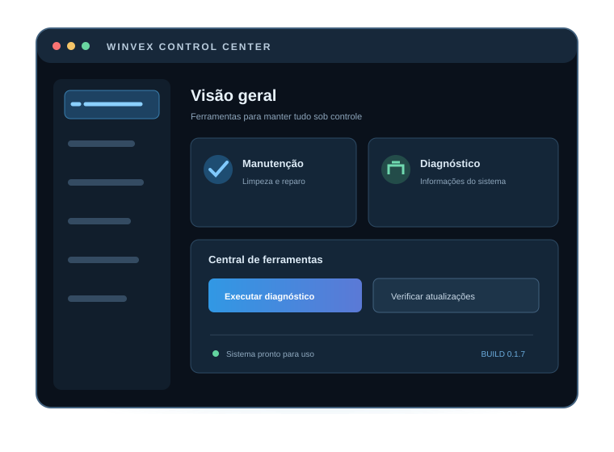
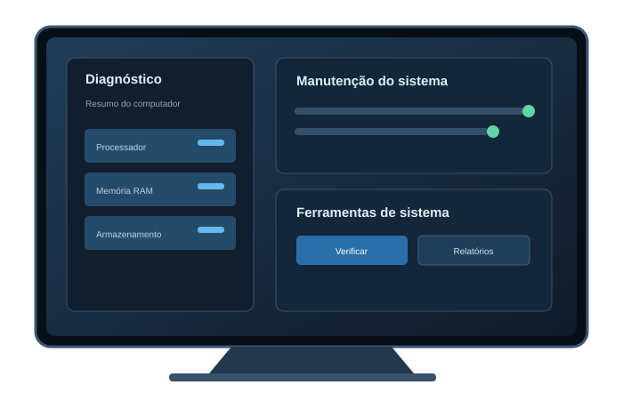

01 / MANUTENÇÃO
Cuide do sistema
Atalhos e rotinas para limpeza de arquivos temporários, cache selecionado e verificações do Windows.
Limpeza · SFC · DISMManutenção, diagnóstico e ferramentas para o dia a dia do seu PC em um só lugar. Conheça o WINVEX, um centro de controle pensado para simplificar tarefas técnicas.

O WINVEX organiza utilitários de manutenção e diagnóstico para que você encontre o que precisa sem navegar por várias janelas do Windows.
Atalhos e rotinas para limpeza de arquivos temporários, cache selecionado e verificações do Windows.
Limpeza · SFC · DISMReúna informações do hardware e do sistema, com relatórios complementares quando disponíveis.
Hardware · MSInfo32 · DxDiagAcesse opções de energia e rotinas para limpar caches gráficos selecionados.
Energia · NVIDIA · AMDAtalhos para ajustes básicos de rede e atualização de aplicativos compatíveis pelo Winget.
Rede · DNS · WingetPersonalize a interface com tema claro ou escuro, diferentes famílias tipográficas e tamanhos de texto.
Temas · 15 fontes · 10 tamanhosO objetivo é centralizar ferramentas e deixar claro o que cada ação faz. Leia as descrições e confirme antes de executar.
Em vez de decorar caminhos e comandos, use uma interface que agrupa ferramentas comuns em categorias. O WINVEX é uma camada de conveniência — os utilitários continuam sendo executados no seu computador.

Faça o download do arquivo winvex_0.1.7.exe pela página oficial da versão Alpha.
Execute o instalador baixado e siga as instruções apresentadas na tela do Windows.
Inicie o WINVEX após a instalação. Leia a descrição de cada ferramenta e confirme somente as ações que desejar.
Esta é uma versão experimental, derivada da base de ferramentas da linha Win Optimizer Premium. O projeto está em evolução e precisa de testes em diferentes configurações de Windows e hardware.
Primeiro passo de uma central de controle em constante evolução.
Faça o download do instalador para Windows 10 ou Windows 11 e siga as etapas exibidas pelo instalador.
Arquivo: winvex_0.1.7.exe · Versão experimental Alpha.Não. O WINVEX oferece ferramentas de manutenção e ajustes, mas não garante aumento de FPS, redução de ping ou melhoria perceptível. Os resultados dependem do computador, dos aplicativos e da configuração do Windows.
Algumas operações exigem privilégios administrativos e podem solicitar confirmação do UAC. Conceda permissão somente quando entender a ação solicitada.
Não. A versão 0.1.7 é uma Build Alpha experimental. Faça backup dos dados importantes e evite testar em computadores de produção.
Baixe o arquivo winvex_0.1.7.exe pelo botão de download, execute-o e siga as instruções do instalador. Não é necessário extrair um arquivo ZIP.
Utilize o instalador publicado na release oficial do WINVEX no GitHub. Confira o nome do arquivo antes de executar.
Não. Ele organiza o acesso a ferramentas nativas e scripts auxiliares. Os componentes do próprio Windows continuam responsáveis pelas operações de sistema.